bp_meatheavy <- read.csv("datasets/bp_meatheavy.csv")Interactions (L7)
Thought for the week:
“You should arrive at answers on your own, and not rely upon what you get from someone else. Answers from others are nothing more than stopgap measures, they’re of no value.”
- Ichiro Kishimi & Fumitake Koga, The Courage to Be Disliked
They instead encourage answers gained from curiosity, observation, and dialogue. Answers you develop for yourself are more likely to stick with you, and to be meaningful.
When we mentor, ask questions that encourage others to think for themselves, rather than simply giving answers. This is hard, but worthwhile.
Introduction
In the previous chapters we have looked at models with a special type of simplicity: the effect of each explanatory variable on the response variable is independent of the other explanatory variables. This is special because it means that we can understand the effect of each explanatory variable on the response variable separately, without considering the other explanatory variables. Nevertheless, this is often not the case in real life. The effect of one explanatory variable on the response variable may depend on the value of another explanatory variable. This is called an interaction effect, or simply an interaction.
Interactions are some of the most interesting phenomena in science, including biology. We are not talking about interactions between species, like predation, though these are also very interesting. We are talking about effects of one thing, like diet, depending on another thing, like exercise. Let’s break that down a bit…
Imagine we make a study of the effect of exercise (minutes per week) on blood pressure for people with a meat heavy diet.
Read in the dataset:
Here are the first few rows of the data:
head(bp_meatheavy) bp mins_per_week diet
1 94.12854 53.10173 meat heavy
2 90.99957 74.42478 meat heavy
3 73.83541 114.57067 meat heavy
4 77.05434 181.64156 meat heavy
5 100.14578 40.33639 meat heavy
6 95.61900 179.67794 meat heavyAnd here is a graph of the relationship between blood pressure and minutes of exercise for people with a meat heavy diet:
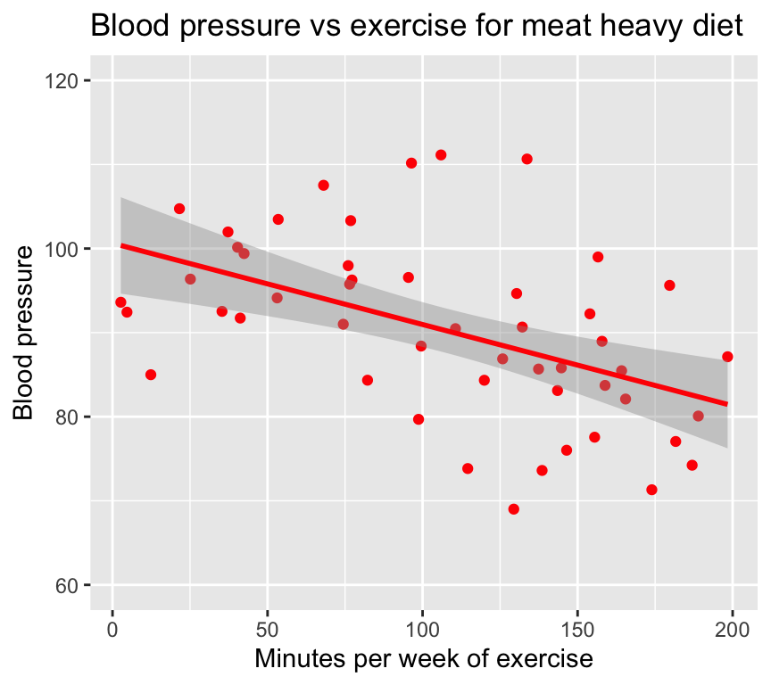
We see that exercise seems to lower blood pressure. But what if we look at the effect of exercise on blood pressure for people with a vegetarian diet? The relationship might look something like this:
bp mins_per_week diet
1 77.56704 122.92899 vegetarian
2 84.30684 111.43191 vegetarian
3 75.23323 65.75546 vegetarian
4 85.67402 90.62629 vegetarian
5 77.45327 100.08819 vegetarian
6 102.31114 36.17327 vegetarianRead in the dataset:
bp_vegetarian <- read.csv("datasets/bp_vegetarian.csv")Here is a graph of the relationship between blood pressure and minutes of exercise for people with a vegetarian diet:
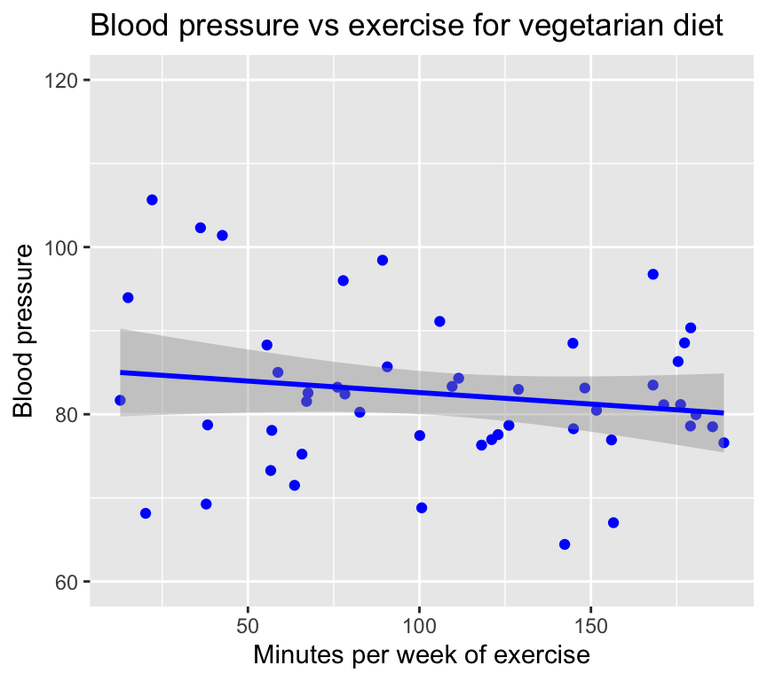
We see that exercise seems to lower blood pressure for vegetarians too, but the effect seems to be weaker.
To summarise this finding, we can say that the effect of exercise on blood pressure is stronger for people with a meat heavy diet than for people with a vegetarian diet. This means that the effect of exercise on blood pressure depends on diet.
This is very clear when we look at the both diets in the same graph:
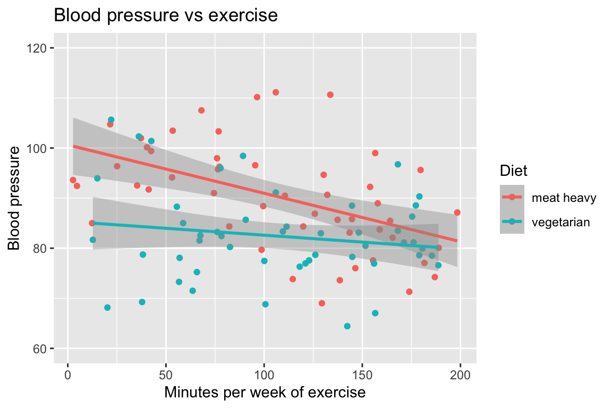
(The dataset with both combined is in the file bp_1cont1cat.csv.)
I think it is clear that the interaction was easier to see when we plotted all the data in one graph… it is much easier to visually compare the slopes of the two regression lines when they are on the same graph.
As we will see later in this chapter, the same holds true for statistical tests of interactions: it is much easier to make a statistical test of the interaction when we make a single model with an interaction term.
It is harder and is not recommended to make a separate regression for each level of the second variable (diet) and then compare the slopes of the regression lines (it is possible, just not at all efficient).
Parallel and non-parallel effects
In the example above, the effect of exercise on blood pressure was stronger for people with a meat heavy diet than for people with a vegetarian diet. That is, the slope of the regression line was steeper for the meat heavy diet than for the vegetarian diet. Put another way, the regression lines are not parallel.
Parallel = no interaction: Parallel regression lines are evidence of no interaction. This means that the effect of one variable (exercise) is the same for all levels of another variable (diet).
Non-parallel = interaction: When the regression lines are not parallel, there is evidence of an interaction. This means that the effect of one variable (exercise) depends on the level of another variable (diet).
That was an example of an interaction between a continuous explanatory variable (exercise) and a categorical explanatory variable (diet). Interactions can also occur between two categorical explanatory variables, or between two continuous explanatory variables. Let us look at some more examples.
Two cats
Two categorical explanatory variables: diet (meat heavy or vegetarian) and exercise (low or high), and one continuous response variable (blood pressure).
Read in the dataset:
bp_2cat <- read.csv("datasets/bp_2cat.csv")Here are the first few rows of the data:
head(bp_2cat) diet exercise reps bp
1 meat heavy high 1 83.73546
2 meat heavy low 1 115.11781
3 vegetarian high 1 74.18977
4 vegetarian low 1 108.58680
5 meat heavy high 2 91.83643
6 meat heavy low 2 103.89843And here is the data in a graph, where we show the individual data points as well as the group means connected by lines. The lines connecting the means are only to help visualize whether there is an interaction or not. If we see non-parallel lines connecting the means, we have evidence of an interaction.
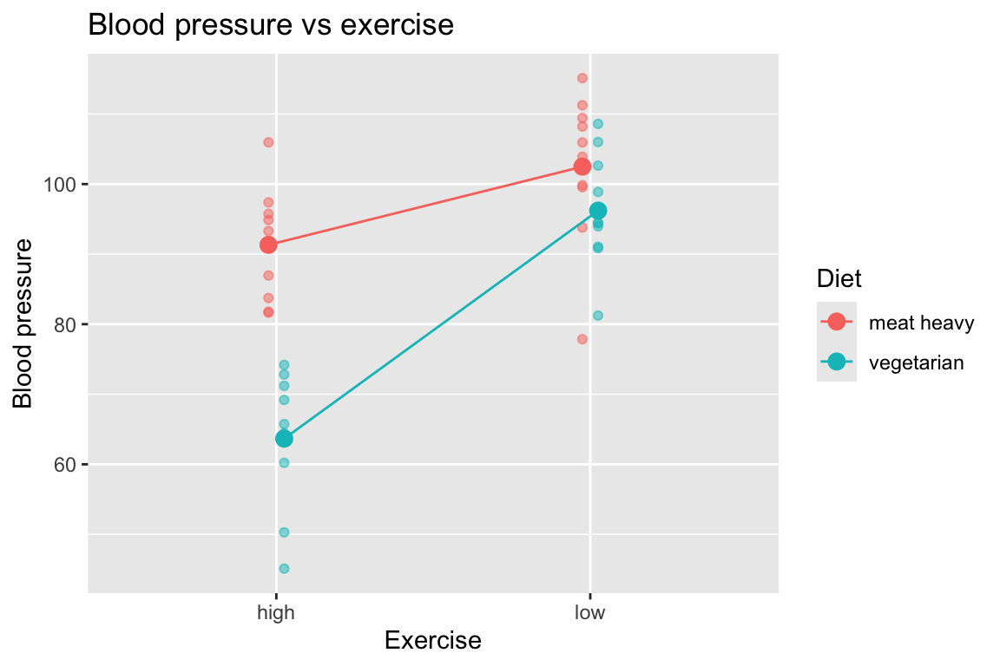
Indeed, the lines connecting the means are not parallel, which is evidence of an interaction between diet and exercise on blood pressure.
Two continuous
Two continuous explanatory variables (age and exercise minutes) and one continuous response variable (blood pressure).
Read in the dataset:
bp_2cont <- read.csv("datasets/bp_2cont.csv")Here is the first few rows of the data:
head(bp_2cont) bp age mins_per_week
1 61.58319 35.93052 130.94479
2 83.86716 42.32743 70.63945
3 93.01438 54.37120 54.05203
4 82.14413 74.49247 198.53681
5 60.13102 32.10092 126.69865
6 102.00306 73.90338 42.64163Now we have a little challenge, namely that we have two continuous explanatory variables. This means that we need to use three dimensions to visualize the data. Here is a standard 2D scatter plot of blood pressure against minutes of exercise, though with age represented by color grading from young (dark blue) to old (yellow):
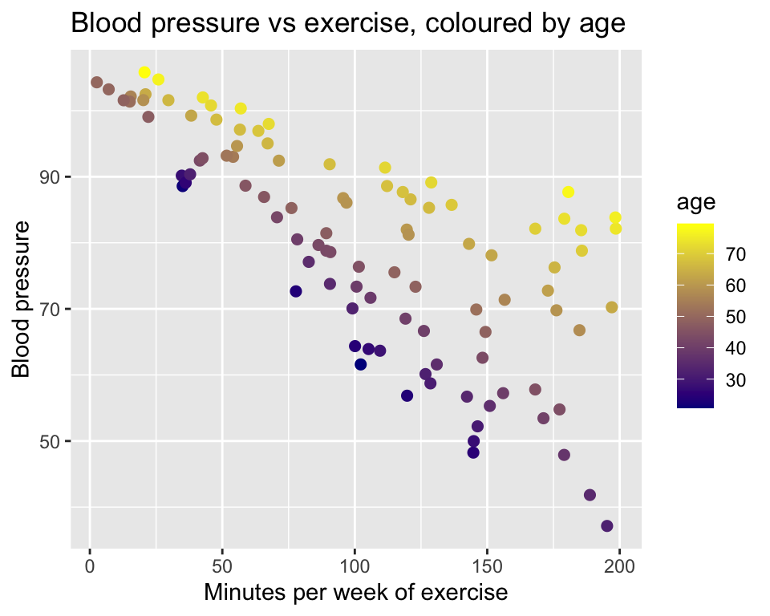
And we can make the complementary plot of blood pressure against age, with minutes of exercise represented by color grading from low (green) to high (orange):
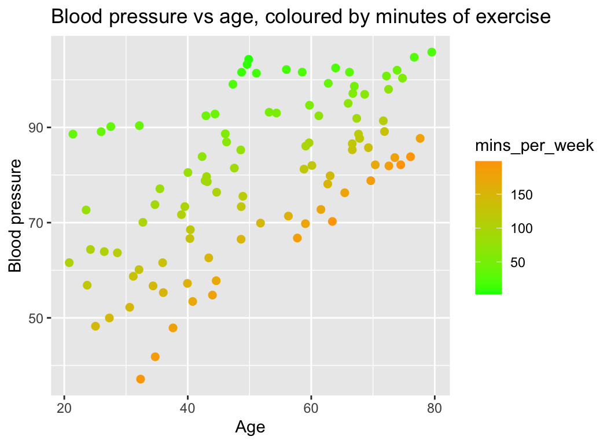
What do we see? If we look at a set of points of the similar colour (i.e., similar number of minutes of exercised), we can see that the slope of the relationship between blood pressure and age depends on exercise. The slope is steeper for people that exercise more.
Yet another way to visualise this interaction is to create categorical versions of age and minutes of exercise, and then plot the data with these categorical variables:
Here is the first few rows of the modified data:
head(bp_2cont) bp age mins_per_week age_class mins_per_week_class
1 61.58319 35.93052 130.94479 30-40 120-140
2 83.86716 42.32743 70.63945 40-50 60-80
3 93.01438 54.37120 54.05203 50-60 40-60
4 82.14413 74.49247 198.53681 70-80 180-200
5 60.13102 32.10092 126.69865 30-40 120-140
6 102.00306 73.90338 42.64163 70-80 40-60And here is the plot of blood pressure against minutes of exercise, with age class represented by colour. Regression lines have been added, to help visualize any interaction:
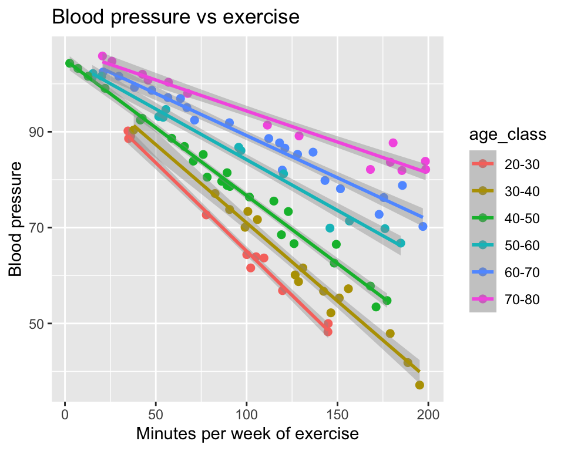
It is as we saw in the previous version of the graph. The slope of the relationship between blood pressure and minutes of exercise depends on age. The slope is shallower for older people.
In the complementary graph of blood pressure against age, with minutes of exercise represented by colour, we see the same interaction:
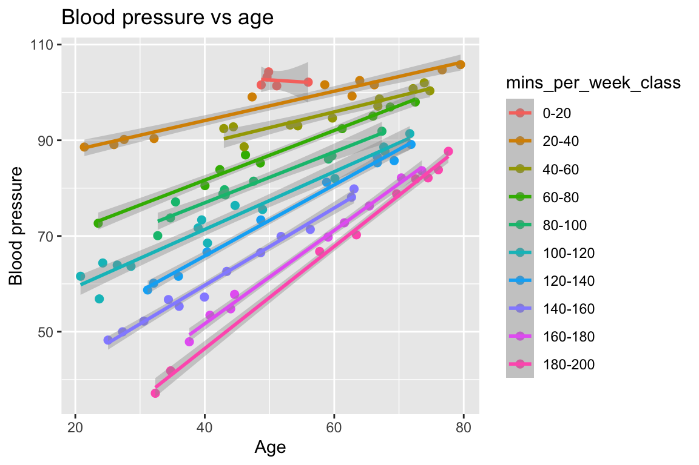
Important
There is only one interaction We made two graphs of the same data, one with age as a categorical variable and one with minutes of exercise as a categorical variable. In both graphs we see an interaction. This is not us seeing two separate interactions, however. There is only one interaction here, namely that the effect of age on blood pressure depends on minutes of exercise, and equivalently, that the effect of minutes of exercise on blood pressure depends on age. The two graphs just look at the same interaction from different perspectives.
Other perspectives
Interactions and additivity of effects
Another way of thinking about interactions is from the perspective of additivity or non-additivity of effects. Imagine we made two separate studies, one of the effect of diet on blood pressure, and one of the effect of exercise on blood pressure. In the first study we only varied diet, and in the second study we only varied exercise. In the first study we found an effect size of diet on blood pressure of say 10 mmHg (e.g., difference between meat heavy and vegetarian). And in the second study we found an effect size of exercise on blood pressure of 15 mmHg (e.g., difference between low and high exercise).
If the effects are non-additive, we would expect the effect size to be different from additive. For example, if we found the combined effect of diet and exercise on blood pressure to be 40, we would say that the effects are non-additive. Their combined effect is more than the sum of their individual effects. This example is of a synergistic interaction because the combined effect (40) is greater than the sum of the individual effects (25).
Drug interactions
When a doctor is considering giving us a particular medication, we are asked if we are taking any other medications. This is because the effects of drugs can interact. For example, if we take two drugs that both lower blood pressure and they interfere with each other, the combined effect might be less than the sum of their individual effects. This is an antagonistic interaction. It could be worse than that though, the interaction might actually be harmful, which is why doctors are so careful about drug interactions.
The maths bit
Let us return to the example of the effects of number of minutes of exercise and diet on blood pressure:
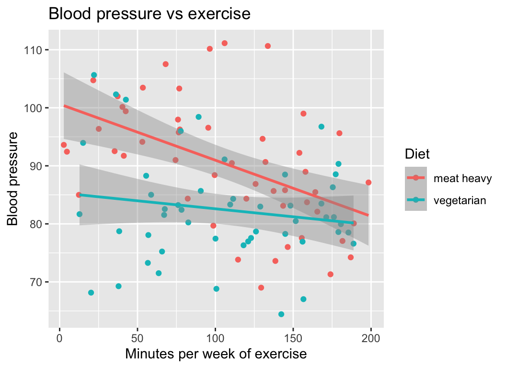
We have one continuous explanatory variable (minutes of exercise) and one binary explanatory variable (diet) and one continuous response variable (blood pressure).
\[y_i = \beta_0 + \beta_1 x_{i}^{(1)} + \beta_2 x_{i}^{(2)} + \epsilon_i\]
where:
- \(y_i\) is the blood pressure of the \(i\)th participant
- $x_i^{(1)} is the number of minutes of exercise of the \(i\)th participant
- \(x_i^{(2)}\) is the diet of the \(i\)th participant
- \(\beta_0\) is the intercept
- \(\beta_1\) is the effect of exercise on blood pressure
- \(\beta_2\) is the effect of diet on blood pressure
- \(\epsilon_i\) is the error term for the \(i\)th participant.
This model is a multiple regression model in which one of the explanatory variables is binary.
\[y_i = \beta_0 + \beta_1 x_{i}^{(1)} + \beta_2 x_{i}^{(2)} + \beta_3 (x_{i}^{(1)} x_{i}^{(2)}) + \epsilon_i\]
where:
- \(x_{i}^{(1)}x_{i}^{(2)}\) is the product of the number of minutes of exercise and the diet of the \(i\)th participant.
- \(\beta_3\) is the coefficient of the interaction term between diet and exercise.
We could also write this model as:
\[y_i = \beta_0 + \beta_1 x_{i}^{(1)} + \beta_2 x_{i}^{(2)} + \beta_3 x_{i}^{(3)} + \epsilon_i\]
where:
- \(x_{i}^{(3)} = x_{i}^{(1)} x_{i}^{(2)}\)
This is again a multiple regression model, but now with three explanatory variables.
Hypothesis testing
If we want to test whether the effect of minutes of exercise on blood pressure is different for people with different diets, we need a null hypothesis to test.
The null hypothesis is that the effect of minutes of exercise on blood pressure is the same for people with different diets. This is a null hypothesis of no interaction between diet and exercise. In terms of the coefficients of the model, the null hypothesis is that \(\beta_3 = 0\).
If we reject the null hypothesis, we conclude that the effect of minutes of exercise on blood pressure is different for people with different diets. This is a non-additive effect.
Doing it in R
Let us fit the model with the interaction term in R. There are two methods to do this and they are equivalent:
mod1 <- lm(bp ~ mins_per_week + diet + mins_per_week:diet, data=bp_1cont1cat)
mod2 <- lm(bp ~ mins_per_week * diet, data=bp_1cont1cat)The second is a shorthand for the first. The * operator includes the main effects (main effects are terms in the model that don’t include interactions) and the interaction term. The : operator includes only the interaction term.
Of course, we check the model assumptions before we interpret the results:
par(mfrow=c(2,2))
plot(mod2, add.smooth=FALSE)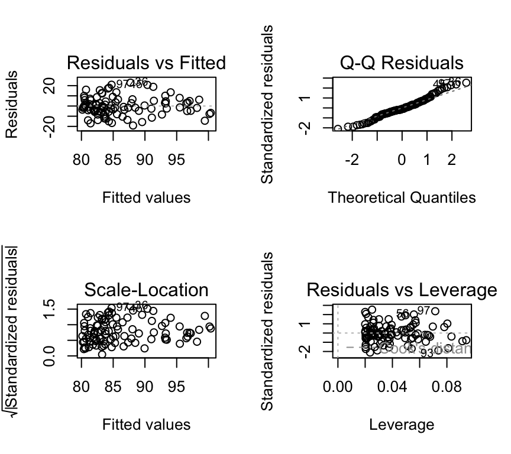
All of the plots look good. Now we can do hypothesis testing of the interaction term using an F-test:
anova(mod2)Analysis of Variance Table
Response: bp
Df Sum Sq Mean Sq F value Pr(>F)
mins_per_week 1 1133.6 1133.55 13.4800 0.0003964 ***
diet 1 1560.8 1560.75 18.5601 3.979e-05 ***
mins_per_week:diet 1 340.4 340.36 4.0475 0.0470408 *
Residuals 96 8072.8 84.09
---
Signif. codes: 0 '***' 0.001 '**' 0.01 '*' 0.05 '.' 0.1 ' ' 1In the ANOVA table we see four rows. The first row is for the main effect of minutes of exercise, the second row is for the main effect of diet, the third row is for the interaction effect between diet and minutes of exercise, and the fourth row is for the residuals. As always, an interaction term in the R output is shown with a colon : between the two variables (here it looks like mins_per_week:diet).
In this example, the F-statistic for the interaction term is quite large (4.05), and the p-value is very small (0.047). This means that we reject the null hypothesis that there is no interaction between diet and minutes of exercise on blood pressure. We conclude that the effect of minutes of exercise on blood pressure is different for people with different diets.
If we like (and we don’t have to), we can look at the coefficients of the model:
summary(mod2)$coefficients Estimate Std. Error t value Pr(>|t|)
(Intercept) 100.62716134 2.87228930 35.033783 1.714199e-56
mins_per_week -0.09661054 0.02406014 -4.015376 1.177969e-04
dietvegetarian -15.27591304 4.09882726 -3.726898 3.275630e-04
mins_per_week:dietvegetarian 0.06907583 0.03433487 2.011828 4.704076e-02As expected, there are four coefficients.
The first is (Intercept), which is the expected blood pressure for a person who does 0 minutes of exercise and is on diet “meat heavy”.
The second is mins_per_week, which is the effect (slope) of minutes of exercise on blood pressure for a person on diet “meat heavy”.
The third is dietvegetarian, which is the effect of being on a vegetarian diet on blood pressure for a person who does 0 minutes of exercise. This can be thought of as the change in the intercept for a person on a vegetarian diet compared to a person on a “meat heavy” diet.
The fourth is the interaction term mins_per_week:dietvegetarian, which is the difference in the effect (slope) of minutes of exercise on blood pressure for a person on a vegetarian diet compared to a person on a “meat heavy” diet.
Reporting our findings
Of course a nice graph is always helpful. We already have quite a nice one:
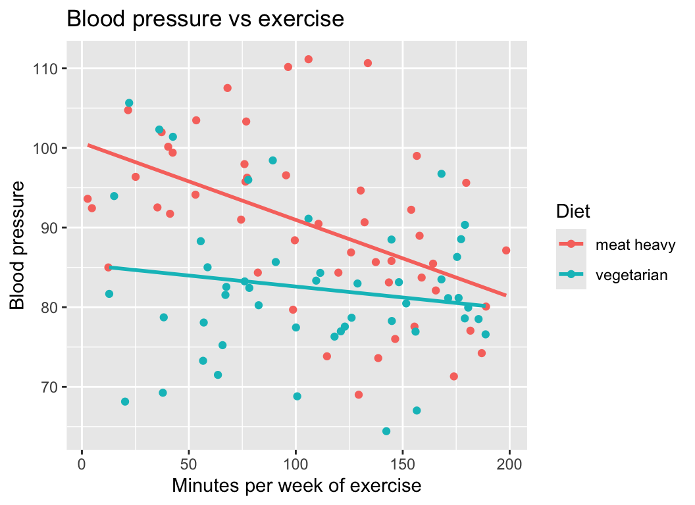
We also might want some tables summarizing the model results. Here is a table of the coefficients:
| Estimate | Std. Error | t value | Pr(>|t|) | |
|---|---|---|---|---|
| (Intercept) | 100.6271613 | 2.8722893 | 35.033783 | 0.0000000 |
| mins_per_week | -0.0966105 | 0.0240601 | -4.015377 | 0.0001178 |
| dietvegetarian | -15.2759130 | 4.0988273 | -3.726898 | 0.0003276 |
| mins_per_week:dietvegetarian | 0.0690758 | 0.0343349 | 2.011828 | 0.0470408 |
We could also report the \(R^2\) of the model:
summary(mod2)$r.squared[1] 0.2732093And also a table of the variances of the terms in the model:
| Df | Sum Sq | Mean Sq | F value | Pr(>F) | |
|---|---|---|---|---|---|
| mins_per_week | 1 | 1133.554 | 1133.55446 | 13.47998 | 0.0003964 |
| diet | 1 | 1560.753 | 1560.75255 | 18.56012 | 0.0000398 |
| mins_per_week:diet | 1 | 340.357 | 340.35702 | 4.04745 | 0.0470408 |
| Residuals | 96 | 8072.804 | 84.09171 | NA | NA |
We also might use a sentence like this to report the results: “The effect of minutes of exercise is generally negative, but the effect is stronger for people on a meat heavy diet than for people on a vegetarian diet (\(F\)-statistics of interaction term = 4.05, degrees of freedom = 1, degrees of freedom residuals = 96, \(p\)-value = 0.047).”
Multiple regression vs. many single regressions
Question: Why not just fit a separate simple regression model and then test whether the slopes are the same (i.e., if they are parallel)? That is, why not fit the two models:
\[y_i = \beta_{0,veg} + \beta_{1,veg} x_i^{(1)} + \epsilon_i\]
\[y_i = \beta_{0,meat} + \beta_{1,meat} x_i^{(2)} + \epsilon_i\]
and compare the estimate of \(\beta_{1,veg}\) to the estimate of \(\beta_{1,meat}\)?
Well, you could do that, and could probably find a way to test for whether the difference in the slopes is different from 0. This would be a test of the null hypothesis that the effect of minutes of exercise on blood pressure is the same for people with different diets. But, this would be a more complicated way to do it, and would not be as general as the model with the interaction term. The model with the interaction term is more general, more flexible, and more elegant.
Note
It is usually better model the whole dataset to test a single hypothesis, rather dividing up the dataset into smaller parts, fitting a model to each part, and then comparing the results of the models. The latter approach is less efficient and less elegant. One hypothesis = one model.
ANCOVA
The example we just worked through was with one continuous explanatory variable (minutes of exercise) and one categorical explanatory variable (diet). This is an example of an analysis of covariance (ANCOVA). ANCOVA is a type of linear model in which there are both continuous and categorical explanatory variables.
ANCOVA is often used in two main ways.
First, it can be used to account for covariates (continuous variables). In this case, the main interest is in comparing groups (as in ANOVA), while one or more continuous variables are included to explain additional variation in the response. These covariates are not the main focus of interpretation; instead, they help adjust group means and improve the precision of group comparisons.
Second, ANCOVA can be used to test whether covariate effects differ between groups. Here, the continuous variable is of real interest, and the question is whether the relationship between the covariate and the response is the same across groups. This is done by including a group × covariate interaction, which allows the slope of the relationship to differ between groups.
An important distinction is that the first use assumes the covariate has the same effect in all groups (parallel slopes), while the second explicitly tests whether this assumption is valid.
Two-way ANOVA
Above we had an example with two categorical explanatory variables (diet [levels: meat heavy or vegetarian] and exercise [levels: low or high]) and one continuous response variable (blood pressure). This is an example of a two-way ANOVA. Two-way ANOVA is used to test for effects of two categorical explanatory variables, as well as their interaction effect on a continuous response variable.
Here are the first few rows of the data again:
diet exercise reps bp
1 meat heavy high 1 83.73546
2 meat heavy low 1 115.11781
3 vegetarian high 1 74.18977
4 vegetarian low 1 108.58680
5 meat heavy high 2 91.83643
6 meat heavy low 2 103.89843Here is the graph of the data again:
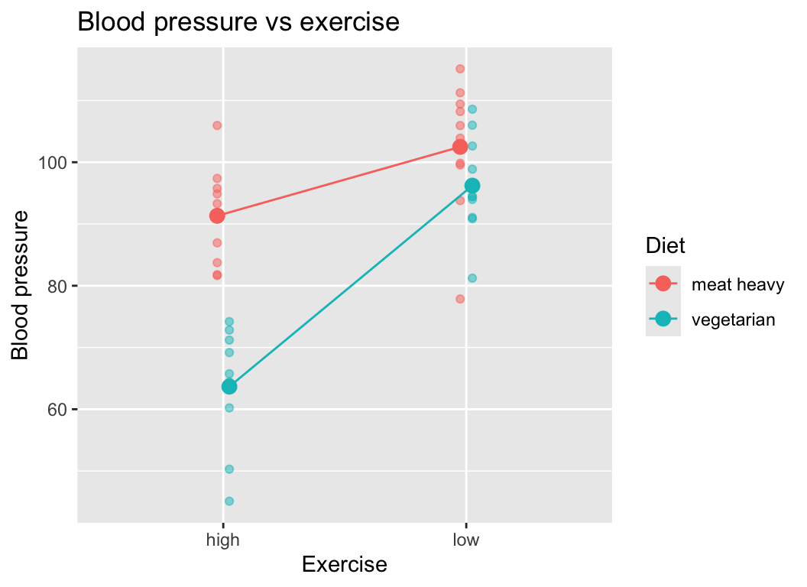
We can fit a two-way ANOVA model in R as follows:
mod_2cat <- lm(bp ~ diet * exercise, data=bp_2cat)Recall that this fits a model with main effects of diet and exercise, as well as their interaction effect. Recall that we could specify the model equivalently as:
mod_2cat <- lm(bp ~ diet + exercise + diet:exercise, data=bp_2cat)We can check the model assumptions:
par(mfrow=c(2,2))
plot(mod_2cat, add.smooth=FALSE)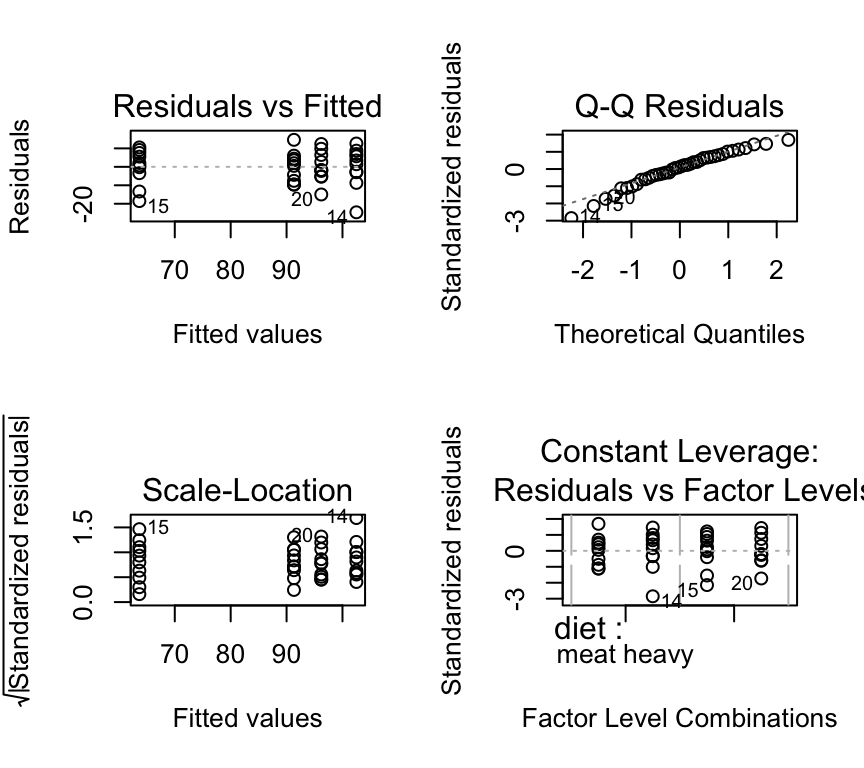
These look ok.
Hypothesis testing the interaction is just as before. We use an F-test on the interaction term to test the null hypothesis that there is no interaction between diet and exercise on blood pressure.
anova(mod_2cat)Analysis of Variance Table
Response: bp
Df Sum Sq Mean Sq F value Pr(>F)
diet 1 2879.8 2879.8 34.695 9.741e-07 ***
exercise 1 4776.5 4776.5 57.546 5.680e-09 ***
diet:exercise 1 1142.5 1142.5 13.765 0.000696 ***
Residuals 36 2988.1 83.0
---
Signif. codes: 0 '***' 0.001 '**' 0.01 '*' 0.05 '.' 0.1 ' ' 1In the ANOVA table we see four rows. The first row is for the main effect of diet, the second row is for the main effect of exercise, the third row is for the interaction effect between diet and exercise, and the fourth row is for the residuals. As always, an interaction term in the R output is shown with a colon : between the two variables (here it looks like diet:exercise).
In this example, the F-statistic for the interaction term is quite large (13.76 and the corresponding p-value is quite small (7^{-4}. Hence, we conclude that there is a strong evidence of an interaction between diet and exercise on blood pressure. The effect of exercise on blood pressure depends on diet.
Important
Reporting two-way ANOVA results When reporting the results of a two-way ANOVA, it is important to focus on the biological interpretation of the results, rather than the statistical details. Include statistics in parentheses, in support of your statements. For example, you might say something like: “The effect of exercise was different for people on different diets, with a stronger effect for those on a vegetarian diet compared to those on a meat heavy diet (F(1, 36) = 13.77, p < 0.001).”
More than two levels
What if we had a categorical explanatory variable with more than two levels? For example, what if diet had three levels: meat heavy, vegetarian, and vegan?
Here is an example dataset.
Read in the dataset:
bp_2cat_3levels <- read.csv("datasets/bp_3cat.csv")Here are the first few rows of the data:
head(bp_2cat_3levels) diet exercise reps bp
1 meat heavy high 1 83.73546
2 meat heavy low 1 115.11781
3 vegan high 1 59.18977
4 vegan low 1 98.58680
5 vegetarian high 1 68.35476
6 vegetarian low 1 98.98106Here is the graph of the data:
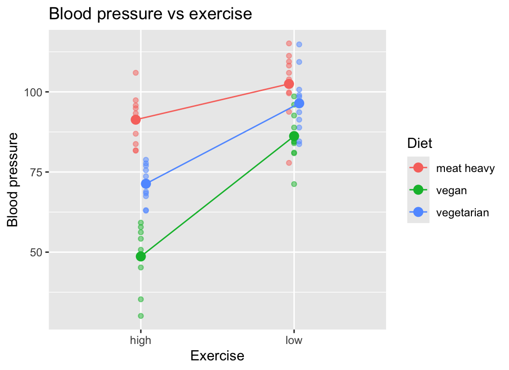
Or plotted differently:
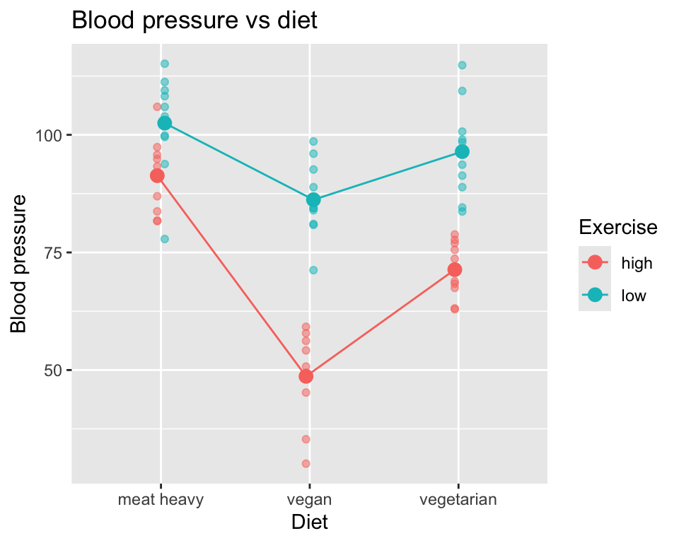
The hypothesis testing is the same as before. We fit the model with interaction term:
mod_2cat_3levels <- lm(bp ~ diet * exercise, data=bp_2cat_3levels)We check the model assumptions:
par(mfrow=c(2,2))
plot(mod_2cat_3levels, add.smooth=FALSE)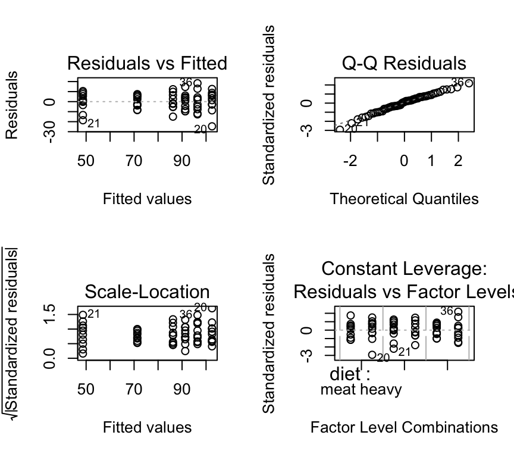
These look ok.
Now we do the ANOVA:
anova(mod_2cat_3levels)Analysis of Variance Table
Response: bp
Df Sum Sq Mean Sq F value Pr(>F)
diet 2 8724.1 4362.1 55.636 7.644e-14 ***
exercise 1 9078.3 9078.3 115.789 4.791e-15 ***
diet:exercise 2 1741.3 870.6 11.104 9.130e-05 ***
Residuals 54 4233.8 78.4
---
Signif. codes: 0 '***' 0.001 '**' 0.01 '*' 0.05 '.' 0.1 ' ' 1Important: Although we have a categorical variable with three rather than two levels, we still have only four rows in the ANOVA table. One for each main effect (diet and exercise), one for the interaction effect (diet:exercise), and one for the residuals. This is because the ANOVA table tests each effect as a whole, rather than testing each level of the categorical variable separately.
In this case, we see that there is strong evidence of main effects of diet and exercise on blood pressure, as well as strong evidence of an interaction effect between diet and exercise on blood pressure.
Reporting the patterns and statistics is similar to before, but now we have more levels to consider so the reporting is a bit more complex, and we have to be careful to not over-interpret the results. For example, when the hypothesis test is on the interaction term via an F-test, we can only say that there is evidence of an interaction between diet and exercise on blood pressure. We cannot say which diets have different effects of exercise on blood pressure. To do that, we would need to do post-hoc tests, such as pairwise comparisons between the levels of diet within each level of exercise.
Caution
Degrees of freedom Look at the ANOVA table and the degrees of freedom column. For diet, the degrees of freedom is 2, because there are three levels of diet (meat heavy, vegetarian, vegan), and the degrees of freedom is number of levels minus 1. For exercise, the degrees of freedom is 1, because there are two levels of exercise (low, high). For the interaction term diet:exercise, the degrees of freedom is 2, which is the product of the degrees of freedom for diet (2) and exercise (1).
Another way to think about this is how many parameters are estimated? The answer is as follows: six parameters are estimated in total, one for each of the combinations of diet and exercise (3 diets x 2 exercises = 6 combinations). Hence the residual degrees of freedom is total number of observations (60) minus 6.
Don’t worry if this is a bit confusing at first. It will become clearer with practice, and you can ask for it to be explained again and in different ways.
Multiple regression with interaction term
Above we had the example of two continuous explanatory variables (age and minutes of exercise) and one continuous response variable (blood pressure). We saw evidence of an interaction between age and minutes of exercise on blood pressure.
Here are the first few rows of the data again:
bp age mins_per_week age_class mins_per_week_class
1 61.58319 35.93052 130.94479 30-40 120-140
2 83.86716 42.32743 70.63945 40-50 60-80
3 93.01438 54.37120 54.05203 50-60 40-60
4 82.14413 74.49247 198.53681 70-80 180-200
5 60.13102 32.10092 126.69865 30-40 120-140
6 102.00306 73.90338 42.64163 70-80 40-60Here is the data in a graph, with age represented by a colour gradient:

We can fit a multiple regression model with an interaction term in R as follows:
mod_2cont <- lm(bp ~ mins_per_week * age, data=bp_2cont)We check the model assumptions:
par(mfrow=c(2,2))
plot(mod_2cont, add.smooth=FALSE)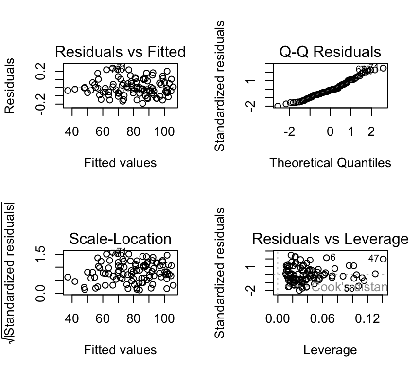
These look ok.
Now we do the F-test for the interaction term:
anova(mod_2cont)Analysis of Variance Table
Response: bp
Df Sum Sq Mean Sq F value Pr(>F)
mins_per_week 1 14307.2 14307.2 1534142 < 2.2e-16 ***
age 1 10220.0 10220.0 1095879 < 2.2e-16 ***
mins_per_week:age 1 1764.8 1764.8 189242 < 2.2e-16 ***
Residuals 96 0.9 0.0
---
Signif. codes: 0 '***' 0.001 '**' 0.01 '*' 0.05 '.' 0.1 ' ' 1It looks the same as in the two-way ANOVA case! This is because we still have two variables and their interaction, so the ANOVA table has one row for each main effect (mins_per_week and age), one row for the interaction effect (mins_per_week:age), and one row for the residuals.
The F-statistic for the interaction term is very large (1.8924178^{5}) and the corresponding p-value is very small (5.6^{-160}). Hence, we conclude that there is very strong evidence of an interaction between minutes of exercise and age on blood pressure. The effect of minutes of exercise on blood pressure depends on age, with a stronger effect for younger people compared to older people.
Intepreting main effects and interaction effects
The term main effect refers to the individual effect of each categorical explanatory variable on the response variable, ignoring the other variable. For example, the main effect of diet would be the difference in blood pressure between meat heavy and vegetarian diets, averaged over both levels of exercise.
However, if there is an interaction between the two categorical explanatory variables, the main effects may not fully capture the relationship. The interaction effect indicates that the effect of one categorical variable on the response variable depends on the level of the other categorical variable. For example, the effect of diet on blood pressure may differ between low and high exercise groups.
We can see this in the example:

There is a main effect of diet on blood pressure, as well as a main effect of exercise on blood pressure. However, there is also an interaction effect between diet and exercise on blood pressure, as the effect of diet on blood pressure depends on the level of exercise.
It could look otherwise. For example, if we found a (albeit rather unlikely pattern) of higher blood pressure for vegetarians how exercise little, and lower blood pressure for vegetarians who exercise a lot, we would have a pattern as follows:

Here there is no main effect of diet on blood pressure, as the average blood pressure for meat heavy and vegetarian diets is the same when averaged over both levels of exercise. There is still a main effect of exercise on blood pressure, as blood pressure is lower for high exercise compared to low exercise. And there is still an interaction effect between diet and exercise on blood pressure, as the effect of diet on blood pressure depends on the level of exercise.
Take home: Interactions are very interesting, but also will require careful and nuanced interpretation.
More than two explanatory variables
All the examples above had two explanatory variables. What if we have more than two explanatory variables? The principles are the same, but the models and interpretations become more complex. For example, if we have three categorical explanatory variables (A, B, C), we can fit a model with main effects of A, B, and C, as well as all possible interaction effects (A:B, A:C, B:C, A:B:C). The ANOVA table will have one row for each main effect, one row for each two-way interaction effect, one row for the three-way interaction effect, and one row for the residuals.
Interpretation of three-way interactions can be quite complex, as it involves understanding how the effect of one variable on the response variable depends on the levels of the other two categorical variables. Very careful consideration and visualization of the data are often necessary to fully understand and communicate the results.
Review
- Interactions are some of the most interesting effects in biology and medicine. They occur when the effect of one explanatory variable on the response variable depends on the level of another explanatory variable.
- Interactions can occur between continuous and categorical explanatory variables, or between two categorical explanatory variables, or between two continuous explanatory variables.
- Visualization is key to understanding interactions. Use graphs to explore and communicate interactions.
- Hypothesis testing for interactions is done using \(F\)-tests on the interaction terms in linear models.
- The degrees of freedom for interaction terms depend on the levels of the categorical variables involved. Each categorical variable takes degrees of freedom equal to the number of levels minus one. Each continuous variable takes one degree of freedom. The degrees of freedom for the interaction term is the product of the degrees of freedom of the individual variables.
- Report interactions carefully, focusing on the biological interpretation and including relevant statistics (i.e., the \(F\)-statistic, degrees of freedom for the interaction term, degrees of freedom for error, and p-value).
Further reading
- Wikipedia is always a good place to start for understanding concepts: Interaction term (statistics)
- This is a nice paper for clinicians on understanding interactions: How to interact with interactions: what clinicians should know about statistical interactions
- If you want a challenge, and to see how nuanced interactions and interpretation can be, have a look at this paper Interactions in statistical models: Three things to know
Extras
Degrees of freedom
It can be useful to think about degrees of freedom in terms of how many parameters / coefficients have to be estimated by the model.
In one-way ANOVA, this is the number of groups one has. So if you have a categorical variable with five categories (in another language one would say a factor variable with five levels), there will be five means estimated, and so the model uses five degrees of freedom. So error degrees of freedom will be the total number of observation minus five.
In two-way ANOVA (which includes the interaction of the two categorical variables) we have to estimate a mean for each of the combinations of the categories. So if we have one categorical variable with three levels and another with four, there are 3*4 combinations, so 12 means to estimate. So the model takes 12 degrees of freedom, and the error degrees of freedom will be the number of observations minus 12.
If we made a two-way ANOVA without an interaction (i.e. we included only the main effects) between the two explanatory variables, and we could have (i.e. we had performed a fully factorial experiment), well, this is just weird. Why would we not do the analysis we planned when we designed the experiment?
(I raised that in case anyone wants to know how to calculate degrees of freedom with only main effects. In that case, the two explanatory variables share the same reference level (intercept) so in the case above, only 6 things would need to be estimated: A shared intercept, and the other five means. Its a bit like when we previously made a regression model with two regression lines, both with the same slope. They shared the same slope – so only one needed to be estimated. So often when we use only main effects, getting the degrees of freedom is a bit tricky.)
Bottom line: more explanatory variables, more interactions, more levels in categorical explanatory variables = more things have to be estimated = fewer degrees of freedom for error. And few degrees of freedom for error is not good, generally speaking.
3d scatter plot
Here is a 3D scatter plot of the data with two continuous explanatory variables (age and minutes of exercise) and one continuous response variable (blood pressure). This plot helps to visualise the interaction between age and minutes of exercise on blood pressure.
(Please note that this plot is best viewed in the HTML version of the book; in the PDF version, it will appear as a static image.)
plotly::plot_ly(bp_2cont, x = ~mins_per_week, y = ~age, z = ~bp, type = "scatter3d", mode = "markers", color = age, width=500, height=500) %>%
plotly::layout(title = "3D Scatter plot of Blood Pressure vs Exercise and Age",
scene = list(xaxis = list(title = "Minutes per week of exercise"),
yaxis = list(title = "Age"),
zaxis = list(title = "Blood Pressure"))
)Types of sums of squares
Important
A note on anova() and “Type I” (sequential) sums of squares
In this course we often use anova() to test terms in a linear model. In base R, anova() for an lm uses Type I (sequential) sums of squares. That means the test for each term is done in the order the terms appear in the model formula: each term is tested after the terms before it have already been included.
In balanced designs (equal sample sizes in each group/combination), the order usually does not matter much. But in unbalanced designs (unequal sample sizes), the p-value for a ““main effect” or an interaction can change if you change the order of terms in the model formula.
This is related to collinearity between explanatory variables. When explanatory variables are correlated, the variance they explain in the response variable overlaps. In that case, the order of terms matters because earlier terms get to “claim” more of the shared variance.
So: when you see an ANOVA table from anova(), remember that it is testing terms sequentially, not “all at once”.
Box and whisker plot for two cats
Often you will see box and whisker plots used to visualise data with two categorical explanatory variables. Here is how to make such a plot in R:
ggplot(bp_2cat, aes(x=diet, y=bp, fill=exercise)) +
geom_boxplot(position=position_dodge(width=0.8)) +
labs(title="Blood pressure vs diet and exercise",
x="Diet",
y="Blood pressure",
fill="Exercise")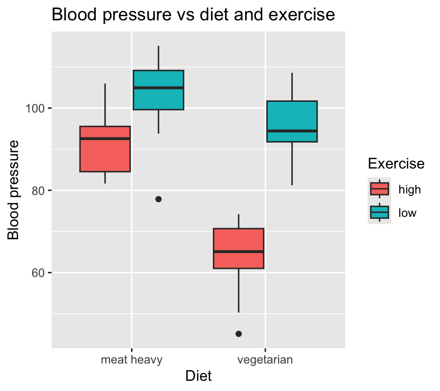
I (Owen) prefer to show the individual data points whenever possible, so here is a box and whisker plot with the individual data points overlaid:
ggplot(bp_2cat, aes(x=diet, y=bp, fill=exercise)) +
geom_boxplot(position=position_dodge(width=0.8), alpha = 0.5) +
geom_jitter(aes(col=exercise), position=position_jitterdodge(jitter.width=0.2, dodge.width=0.8), size=2, alpha = 0.7) +
labs(title="Blood pressure vs diet and exercise",
x="Diet",
y="Blood pressure",
fill="Exercise",
col="Exercise")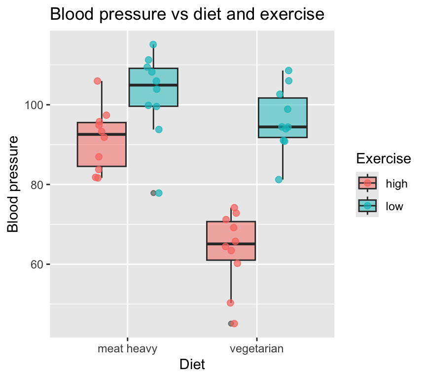
I, and others, prefer to not use bar plots with error bars to visualise data with categorical explanatory variables. Bar plots hide the individual data points and can be misleading. Box and whisker plots are better, but still hide some of the data. Scatter plots with jittered points are often the best way to visualise such data.
In case you must use bar plots with error bars, here is how to make one in R:
grouped_data <- group_by(bp_2cat, diet, exercise) %>%
summarise(mean_bp = mean(bp), sd_bp = sd(bp), n = n(), se_bp = sd_bp / sqrt(n), .groups = "drop")
ggplot(grouped_data, aes(x=diet, y=mean_bp, fill=exercise)) +
geom_bar(stat="identity", position=position_dodge(width=0.8), alpha = 0.5) +
geom_errorbar(aes(ymin=mean_bp - se_bp, ymax=mean_bp + se_bp), position=position_dodge(width=0.8), width=0.2) +
labs(title="Blood pressure vs diet and exercise",
x="Diet",
y="Blood pressure",
fill="Exercise")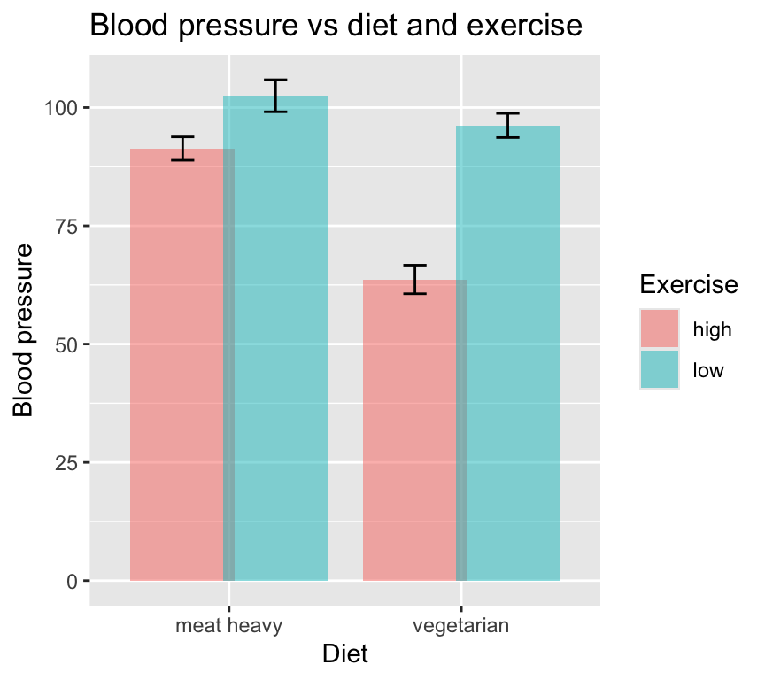